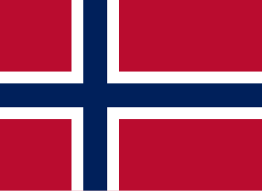
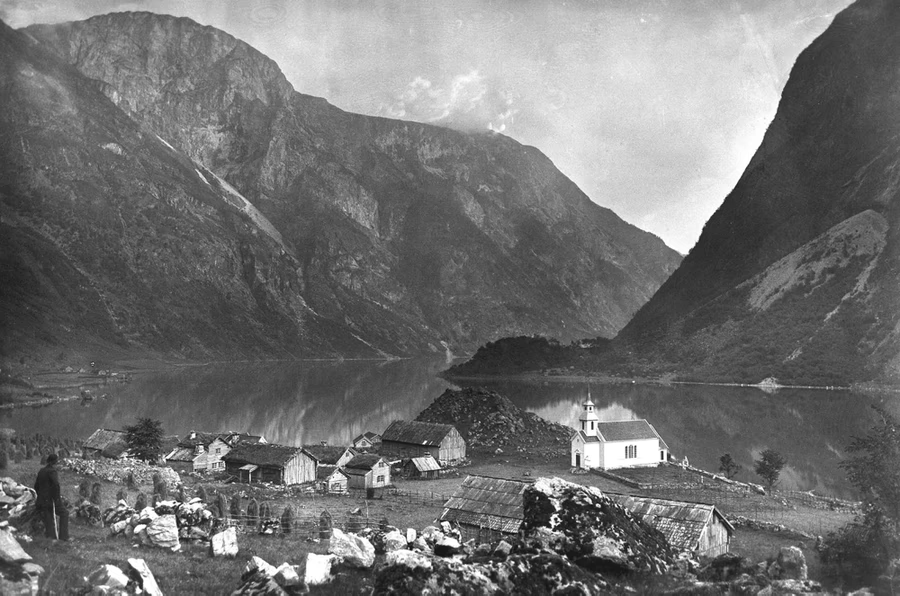
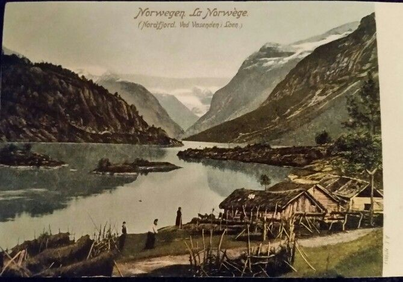

- Powstanie fiordów – ślad epoki lodowcowej
Fiordy Norwegii powstały w wyniku działalności lodowców podczas ostatniej epoki lodowcowej (ok. 2,6 mln – 11 tys. lat temu).
Lodowce żłobiły głębokie doliny w skałach, które po ich cofnięciu zostały zalane wodami Morza Norweskiego.
To dlatego fiordy są tak głębokie — niektóre mają nawet ponad 1300 metrów głębokości (np. Sognefjord).
- Fiordy – szlaki Wikingów
W epoce wikingów (ok. VIII–XI w.) fiordy były głównymi szlakami komunikacyjnymi.
To nimi Wikingowie wypływali na swoje wyprawy handlowe i wojenne.
Wiele ważnych osad, jak Bergen, Trondheim czy Stavanger, powstało właśnie nad fiordami.
- Bergen – brama do fiordów i ośrodek Hanzy
Miasto Bergen, położone nad Byfjorden, od średniowiecza było kluczowym portem handlowym.
W XIV wieku weszło w skład Hanzy, niemieckiego związku kupieckiego.
Dzięki fiordom Bergen mogło utrzymywać handel z Europą, eksportując głównie ryby i drewno.

- Fiordy jako naturalne twierdze
Fiordy często służyły jako naturalne obronne porty.
Strome ściany i wąskie wejścia utrudniały ataki od strony morza.
Podczas II wojny światowej wiele fiordów wykorzystywano jako bazy niemieckich okrętów wojennych – np. w Trondheimfjorden stacjonował pancernik Tirpitz.
- Fiordy a rozwój żeglugi i eksploracji
Norwegowie od wieków byli znakomitymi żeglarzami, a życie nad fiordami wymagało umiejętności poruszania się po wodzie.
To właśnie z takich tradycji zrodzili się później wielcy odkrywcy, jak Roald Amundsen – pierwszy człowiek na biegunie południowym.
- Fiordy jako dziedzictwo UNESCO
Kilka norweskich fiordów wpisano na Listę Światowego Dziedzictwa UNESCO ze względu na ich wyjątkowe walory przyrodnicze i kulturowe.
Należą do nich m.in. Geirangerfjord i Nærøyfjord (od 2005 r.).
Komitet do spraw UNESCO
- Życie na fiordach – trudne, ale piękne
Dawniej rolnicy i rybacy mieszkający na stromych zboczach fiordów prowadzili bardzo surowe życie.
Niektóre farmy, jak Skageflå nad Geirangerfjordem, były dostępne tylko łodzią lub po stromych ścieżkach – co dobrze pokazuje, jak odizolowane były te społeczności.